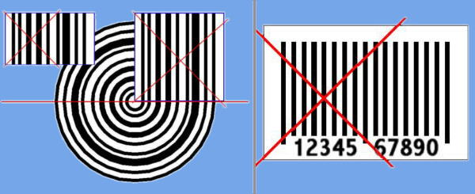
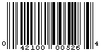
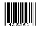

Overview of Universal Product code
The Universal Product Code (UPC or UPC code) is a barcode symbology that is used worldwide for tracking trade items in stores.
The chosen symbology has bars (or spaces) of exactly 1, 2, 3, or 4 units wide each; each decimal digit to be encoded consists of two bars and two spaces chosen to have a total width of 7 units, in both an "even" and an "odd" parity form, which enables being scanned in either direction. Special "guard patterns" (3 or 5 units wide, not encoding a digit) are intermixed to help decoding.
A UPC (technically, a UPC-A) consists of 12 digits that are uniquely assigned to each trade item. The international GS1 organisation assigns the digits used for both the UPC and the related International Article Number (EAN) barcode. UPC data structures are a component of Global Trade Item Numbers (GTINs) and follow the global GS1 specification, which is based on international standards. Some retailers, such as clothing and furniture, do not use the GS1 system, instead using other barcode symbologies or article number systems. Some retailers use the EAN/UPC barcode symbology, but do not use a GTIN for products sold only in their own stores.
History
Wallace Flint proposed an automated checkout system in 1932 using punched cards. Bernard Silver and Norman Joseph Woodland, a graduate student from Drexel Institute of Technology, developed a bull's-eye-style code and applied for the patent in 1949.[3][4]
In the 1960s and early 1970s, railroads in North America experimented with multicolor bar codes for tracking railcars, but this system was eventually abandoned[5] and replaced with a radio-based system called Automatic Equipment Identification (AEI).
In 1973, a group of trade associations from the grocery industry formed the Uniform Product Code Council (UPCC) which, with the help of consultants Larry Russell and Tom Wilson of McKinsey & Company, defined the numerical format that formed the basis of the Uniform Product Code.[6] Technology firms including Charegon, IBM, Litton-Zellweger, Pitney Bowes-Alpex, Plessey-Anker, RCA, Scanner Inc., Singer, and Dymo Industries/Data General, put forward alternative proposals for symbol representations to the council.[citation needed] The Symbol Selection Committee finally chose to implement the IBM proposal designed by George J. Laurer, but with a slight modification to the font in the human readable area.[citation needed]
The first UPC-marked item ever to be scanned at a retail checkout was a 10-pack (50 sticks) of Wrigley's Juicy Fruit chewing gum, purchased at the Marsh supermarket in Troy, Ohio, at 8:01 a.m. on 26 June 1974.[7] The NCR cash register rang up 67 cents.[8] The shopping cart also contained other barcoded items but the gum was the first one picked up at the checkout. A facsimile of the gum packet went on display at the Smithsonian Institution's American history museum in Washington, D.C.[9][10]
Murray Eden was a consultant on the team that created the Universal Product Code barcode.[11][12] As Chairman of a committee of scientists at the Massachusetts Institute of Technology, he helped "select a symbol that would endure the inevitable rush of technology that lay ahead."[13] He chose the font, and he came up with the idea to add numbers to the bottom, which is a fail-safe system, in case the barcode reader is not working correctly.
- UPC-C is a 12-digit code with a product code and a check digit; not in common use.
- UPC-D is a variable length code (12 digits or more) with the 12th digit being the check digit. These versions are not in common use..
- UPC-E is a 6-digit code, that has its equivalent in UPC-A 12-digit code with number system 0 or 1.
Composition
Each UPC-A barcode consists of a scannable strip of black bars and white spaces above a sequence of 12 numerical digits. No letters, characters or other content of any kind may appear on a UPC-A barcode. There is a one-to-one correspondence between 12-digit number and strip of black bars and white spaces, i.e. there is only one way to represent each 12-digit number visually and there is only one way to represent each strip of black bars and white spaces numerically.
- The scannable area of every UPC-A barcode follows the pattern SLLLLLLMRRRRRRE, where S (start), M (middle), and E (end) guard patterns are represented the same way on every UPC-A barcode and the L (left) and R (right) sections collectively represent the 12 numerical digits that make each UPC-A unique. The first digit L indicates a particular number system to be used by the following digits.
- The last digit R is an error detecting check digit, that allows some errors to be detected in scanning or manual entry. The guard patterns separate the two groups of six numerical digits and establish the timing.
Additional Images

Image: The UPC Label showing the general characteristics of Baumeister's proposals.

Image: UPC-AUPC-A 042100005264 is equivalent to UPC-E 425261 with the "EOEEOO" parity pattern, which is defined by UPC-A number system 0 and UPC-A check digit 4.

Image: UPC-E 042100005264 is equivalent to UPC-E 425261 with the "EOEEOO" parity pattern, which is defined by UPC-A number system 0 and UPC-A check digit 4.